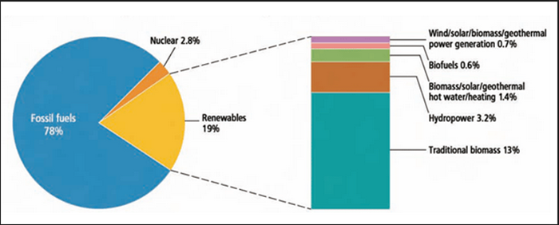
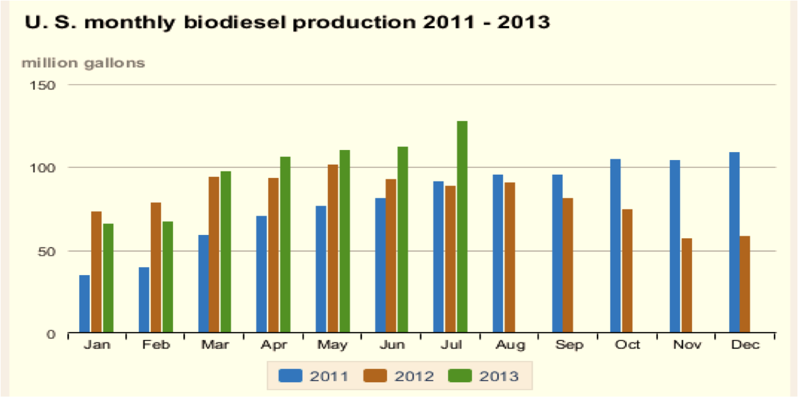
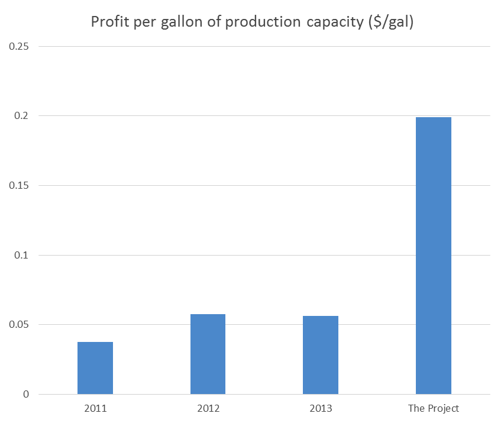

Biodiesel
Market size
- US oil production
- Biodiesel production 
Demand
- Individual consumers
- Military demand
- Transportation
Demand
- Individual consumers
- Price: biodiesel's is higher than diesel's by 7.7%
- Infrastructure: available at only 1.2% of total U.S. gas stations
$\Longrightarrow$Make it hard to commercialize biodiesel
$\Longrightarrow$Most companies need subsidy to maintain their business
Demand
- Individual consumers
- Military demand
- Target: 50% of biofuel by 2020
- Transportation - Airline Industry
- Target: 1% of biofuel by 2015
Production
Production
- General trend of increase in demand
- 50% of idle capacity 
Production
- General trend of increase in demand
- 50% of idle capacity
- How many gallons can be sold from one gallon of capacity?
Production
- General trend of increase in demand
- 50% of idle capacity
- About 20% of capacity can be sold
Profitability
- Profit per unit $=\$0.59/\text{gallon}$
Profitability
Price per unit $=\$4.19/\text{gallon}$less
COGS per unit $=\$3.05/\text{gallon}$
Operation expense per unit $=\$2.05/\text{gallon}$
Net profit per unit $=\$$$-0.91$$/\text{gallon}$
Add
Subsidy per gallon $=\$1.5/\text{gallon}$
Profit per unit$=\$0.59/\text{gallon}$
Work in progress
- US oil production
- 6.4 million barrels in 2012
Market size
- US oil production
- Biodiesel production
- 1 billion gallons in 2012
Market size
- US oil production
- Biodiesel production
Market size
-------
78%
Reveal.js
HTML Presentations Made Easy
Created by Hakim El Hattab / @hakimel
Heads Up
reveal.js is a framework for easily creating beautiful presentations using HTML. You'll need a browser with support for CSS 3D transforms to see it in its full glory.
Vertical Slides
Slides can be nested inside of other slides, try pressing down.
Basement Level 1
Press down or up to navigate.
Basement Level 2
Cornify

Basement Level 3
That's it, time to go back up.
Slides
Not a coder? No problem. There's a fully-featured visual editor for authoring these, try it out at http://slid.es.
Point of View
Press ESC to enter the slide overview.
Hold down alt and click on any element to zoom in on it using zoom.js. Alt + click anywhere to zoom back out.
Works in Mobile Safari
Try it out! You can swipe through the slides and pinch your way to the overview.
Marvelous Unordered List
- No order here
- Or here
- Or here
- Or here
Fantastic Ordered List
- One is smaller than...
- Two is smaller than...
- Three!
Transition Styles
You can select from different transitions, like:
Cube -
Page -
Concave -
Zoom -
Linear -
Fade -
None -
Default
Themes
Reveal.js comes with a few themes built in:
Default -
Sky -
Beige -
Simple -
Serif -
Night
Moon -
Simple -
Solarized
* Theme demos are loaded after the presentation which leads to flicker. In production you should load your theme in the <head> using a <link>.
Global State
Set data-state="something" on a slide and "something"
will be added as a class to the document element when the slide is open. This lets you
apply broader style changes, like switching the background.
Custom Events
Additionally custom events can be triggered on a per slide basis by binding to the data-state name.
Reveal.addEventListener( 'customevent', function() {
console.log( '"customevent" has fired' );
} );
Slide Backgrounds
Set data-background="#007777" on a slide to change the full page background to the given color. All CSS color formats are supported.
Image Backgrounds
<section data-background="image.png">Repeated Image Backgrounds
<section data-background="image.png" data-background-repeat="repeat" data-background-size="100px">Background Transitions
Pass reveal.js the backgroundTransition: 'slide' config argument to make backgrounds slide rather than fade.
Background Transition Override
You can override background transitions per slide by using data-background-transition="slide".
Clever Quotes
These guys come in two forms, inline:
“The nice thing about standards is that there are so many to choose from”
and block:
“For years there has been a theory that millions of monkeys typing at random on millions of typewriters would reproduce the entire works of Shakespeare. The Internet has proven this theory to be untrue.”
Pretty Code
function linkify( selector ) {
if( supports3DTransforms ) {
var nodes = document.querySelectorAll( selector );
for( var i = 0, len = nodes.length; i < len; i++ ) {
var node = nodes[i];
if( !node.className ) {
node.className += ' roll';
}
}
}
}
Courtesy of highlight.js.
Intergalactic Interconnections
You can link between slides internally, like this.
Fragmented Views
Hit the next arrow...
... to step through ...
any type- of view
- fragments
Fragment Styles
There's a few styles of fragments, like:
grow
shrink
roll-in
fade-out
highlight-red
highlight-green
highlight-blue
Spectacular image!

Export to PDF
Presentations can be exported to PDF, below is an example that's been uploaded to SlideShare.
Take a Moment
Press b or period on your keyboard to enter the 'paused' mode. This mode is helpful when you want to take distracting slides off the screen during a presentation.